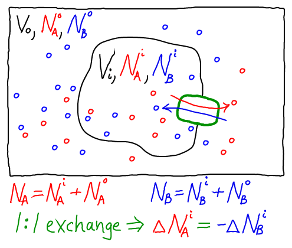
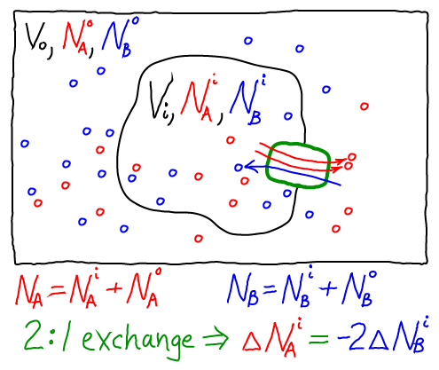

Although our main discussion of exchange focused on a simple 1:1 antiporter (above), other stoichiometries occur. That is, instead of exchanging precisely one A molecule for a B molecule many exchangers use other stoichiometries. One example is the sodium-calcium exchanger NCX, which is important for pumping calcium out of neurons after an action potential.
We can readily construct a thermodynamic model consistent with our usual a href="javascript:changeTo('transportStoich','massAction')">mass-action picture. As for the 1:1 antiporter, the model consists of a href="javascript:changeTo('transportStoich','idealGas')">ideal gases for each of the components: A molecules inside ($i$) and out ($o$), as well as B molecules inside and out. The combined free energy $F$ for the whole system is the sum of the free energies for each of these ideal gases. \begin{align} F = & \fidl(\nai, V_i) + \fidl(\nbi, V_i) \nonumber \\ & + \; \fidl(\nao, V_o) + \fidl(\nbo, V_o) , \label{ftot} \end{align} where we have omitted the temperaure dependence that will not be pertinent here. The total free energy is the simple sum of the component free energies because there are no (energetic) interactions between the components. In an ideal gas, by definition, there are no interactions among molecules.Again following our treatment of the 1:1 antiporter, we must specify one specific state of our system - something like an initial condition. The 2:1 exchange of A and B means that not every possible set of populations ($\nai, \nao, \nbi, \nbo$) is possible. For simplicity, we shall assume that our reference state has all A molecules inside ($\nai = N_A, \nao = 0$) and all B molecules outside ($\nbo = N_B, \nbi = 0$).
Because we are considering a 2:1 antiporter (where two A always exchanges for one B), there is really only one variable that can change. To see this, we can express all the species numbers in terms of $\nbi$, the number of A molecules outside, and the constant species totals $N_A$ and $N_B$:The ability for a 2:1 antiporter to pump more thoroughly should not be taken to mean that the antiporter itself does work. No work is done. Rather, the antiporter acts as a catalyst for bringing the whole system to its minimum free energy - among the accessible states. The only states which are accessible are the initial state and those that differ from it by 2:1 exchange, and the antiporter will tend toward the state with lowest free energy (as in our analysis above). That being said, we should recognize that (i) real antiporters may be subject to slippage and hence have a less well-defined stoichiometry; and (ii) in a cell, there will be other transport mechanisms (e.g., other pumps) and hence a wide variety of concentrations will be accessible.
Importantly, our thermodynamic analysis did not require knowledge of the system's substates, but only the 2:1 stoichiometry.